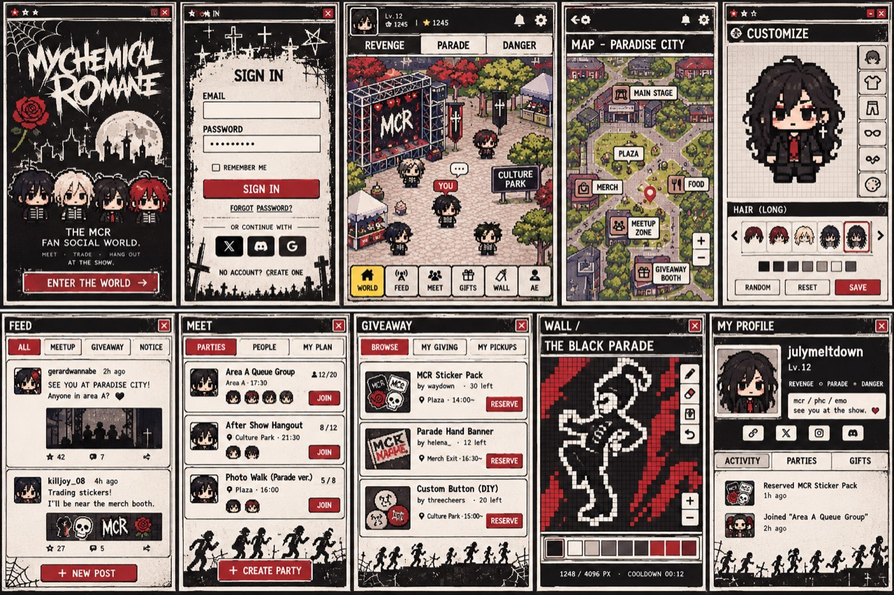
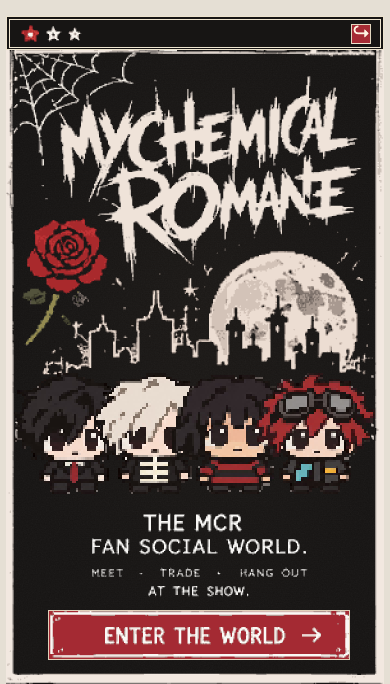
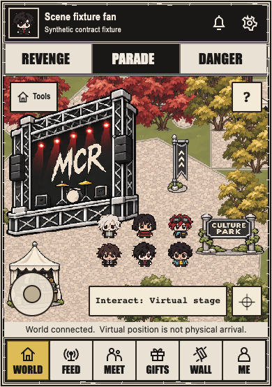
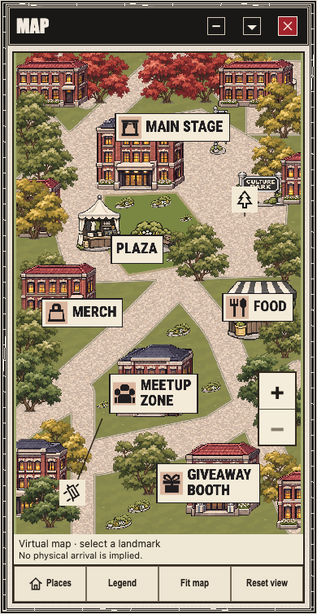
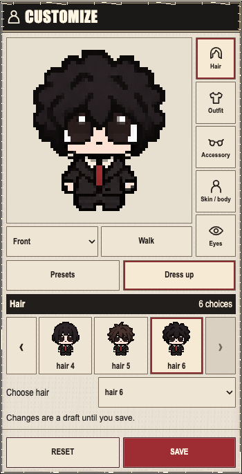
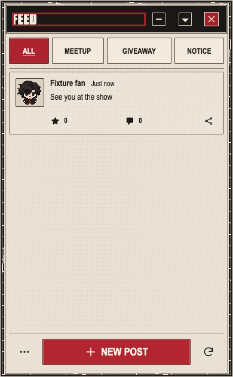
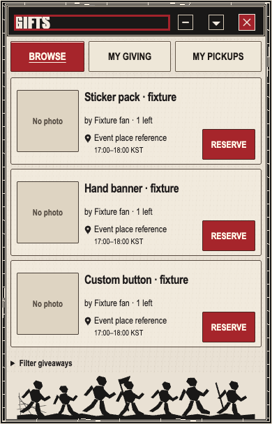
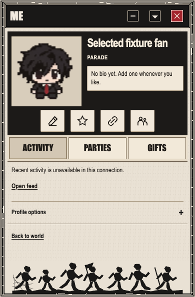

Reference panels use a proportional region guide registered from the earlier ten-panel layout; source JPEG bytes are unchanged. Actual images retain native dimensions and full saved content. This is an offline presentation of already inspected saved frames: no new browser/native capture or HTML-render acceptance is claimed. Different source/fixture/admission contexts are explicit. Original whole QA06 goal remains unfinished.
Landing
Existing 390x684 desktop fixture at original aspect; no new public/legal flow acceptance.
Exact human photo · region guide

Actual existing frame · 390×684 native pixels

Observed: Poster logo, moon/cemetery, rose, four approved characters, tagline and red entry action preserve the main hierarchy. The newly supplied target is more irregular in its edge wear and print lettering; current vector framing is straighter.
Separate content/state limits: Selected-pack faces/poses are source constraints, not permission to copy legacy target character pixels. Required legal/status content can extend beyond the poster; do not remove it.
Next owner/action: Shared frame/print correction routes to Root. No additional landing-specific source defect established in this bounded comparison. Required final composition/device coverage remains open.
Existing 390x746 desktop fixture at original aspect; real mobile keyboard/provider qualification remains open.
Exact human photo · region guideActual existing frame · 390×746 native pixels
Observed: Black cemetery surround, cream form, red submit and lower provider/create-account hierarchy correspond. The top silhouette/print contours and border treatment remain visibly authored differently; shared frame/type needs target-led correction.
Separate content/state limits: Remember-me, enabled social providers and fictional account state are not implied by the reference. Preserve actual validation/consent/reset/create/provider-unavailable states and44px controls.
Next owner/action: Root shared style route only for proven shared drift; no invented auth capability or deletion of required signup/consent flows. Actual iOS/Android keyboard remains NOT_RUN.
Qualified native02 at390x554, published9356. Old architecture data; not combined architecture/currentsemanticMAP.
Exact human photo · region guideActual existing frame · 390×554 native pixels

Observed: Recovered scene373px versus baseline280px materially improves foreground scale and scene-to-nav composition. Target still has broader character distribution and different scene massing; current selected actors remain grouped.
Separate content/state limits: Roster coordinates are explicit synthetic snapshot content, not a production placement defect. Selected art is fixed; no geometry, authoritative feet, camera or fake-position change is inferred. Safety/status and tools are real required controls.
Next owner/action: Shared chrome packet is ready. Root/Artist continue actual architecture/density work; combined corrected frames come from their existing queue. Original full visual criterion stays open.
Exact human photo · region guideActual existing frame · 390×754 native pixels

Observed: Revised brick architecture, six clear labels, winding paths and planting are visible. Central building mass/width, enclosed courtyard feel and populated landscape density still differ from the supplied target.
Separate content/state limits: FOOD/MERCH/etc in this old image are superseded semantic presentation, not desired fictional features. New51-object wings and correctedMCRservice labels/actions are not adopted or proved by this49-object capture.
Next owner/action: Root+Artist already own semanticMap+wings work. Reuse their next qualified corrected frame naturally; do not duplicate capture/source ownership or rename canonical authority IDs.
Qualified Motion component350x685PNG (DOM350x683.984) inside390x698 viewport; publisheda93. Full content element, not publicRoot viewport.
Exact human photo · region guideActual existing frame · 350×685 native pixels

Observed: Responsive267px square preview restores much of the portrait hierarchy over old192px. Real right-side five-category rail, hair choices and red Save remain visible. Extra pose/mode rows and longer panel differ from target composition.
Separate content/state limits: Those extra supported controls must remain reachable; sixth icon/palette/random and target character replacement are not implied features. Keep64px source buffer/approved pixels and genuine draft/reset/save states. Element scrolling cannot certify publicRoot fit.
Next owner/action: Prior preview/aspect repair is bounded verified. Any further composition refinement must preserve actual features in owner scope; publicRoot/device/live-save and whole target fidelity stay open.
Published client390x631, corrected synthetic HTTP/C05, one text-only post; no new flow rerun.
Exact human photo · region guideActual existing frame · 390×631 native pixels

Observed: Bottom compose/duplicate-section repairs are retained. Target has dense illustrated post cards; actual current frame has a small single text-only card and shared mechanical chrome/type.
Separate content/state limits: Post count/photos/reaction totals are fixture content, not permission to fabricate media/activity. The red title rectangle is captured keyboard focus, not decorative border. Real composer/tools/refresh states must remain.
Next owner/action: Root shared frame/type route; Social receives exact visual context and preservation requirements. No new leaf feed-content defect established; actual optional-media state remains a coverage/input distinction.
Published client390x637 with same three party titles/capacities as reference comparison; sourceCSS unchanged througha0db.
Exact human photo · region guideActual existing frame · 390×637 native pixels
Observed: Same three-row layout makes a client type difference assessable: party names/place lines are visually less prominent and smaller relative to row/action chrome than target. Names use fixed15px title CSS; row minheight110px and44px actions are already established. Shared footer repeats one geometric figure.
Separate content/state limits: Missing member portraits and disabled CreateParty represent current fixture/capability states. Do not fabricate members, enable unavailable actions, or copy fictional participation. The captured red heading rectangle is focus.
Next owner/action: Route leaf title/place/action hierarchy to Community for an exact current owner; Root owns shared frame/footer. Preserve the previously fixed CreateParty reachability, row content, statuses and44px targets.
Existing390x608 corrected foreign-owner fixture. Reserve disabled baseline was own fixture mistake; no new Reserve defect.
Exact human photo · region guideActual existing frame · 390×608 native pixels

Observed: Three-row browse/quantity/place/action structure is close. Current125px minimum cards and extra filter line differ from target rhythm; dominant shared drift is frame/footer. Target illustrated item slots are not populated in this fixture.
Separate content/state limits: No-photo labels, quantities, KST windows and genuine own-activity/filter features remain truthful. Do not invent product photos or shorten44px Reserve/link controls to imitate target ink bounds.
Next owner/action: Root shared frame/footer route plus Community context; no independent new Gift leaf fix is asserted from absent optional imagery or supported filters.
Actual default unavailable guard only; this is not a qualified mural editor image.
Exact human photo · region guideActual existing frame · 390×639 native pixels
Observed: The target contains a large mural grid, title, bounded right tool rail, palette and cooldown area. Existing available frame shows only the truthful current-world qualification error, so editor proportions cannot be evaluated from it.
Separate content/state limits: Do not replace this guard with fake target art/anchor/admission. The client editor can and should be compared under its own valid deterministic fixture; publicRoot denial does not make all client work depend on backend/device readiness.
Next owner/action: Current FE32 owner204/Community receives exact visual criteria within its existing editor lease. Palette/grid/confirm/pan/cooldown must use genuine128x128/16-color/server-state requirements, not literal fictional reference counters. Editor comparison remains NOT_RUN in this QA06 frame set.
Published client390x595 cold authorized activity unavailable; profileCSS unchanged througha0db.
Exact human photo · region guideActual existing frame · 390×595 native pixels

Observed: Black profile header, selected avatar, bio/actions/tabs preserve hierarchy. Current portrait shows more full-body figure inside its square than the target’s close portrait; footer is repeated geometric marchers and type/chrome remain different.
Separate content/state limits: Some portrait/hair/body occupancy is selected artwork/configuration, not a client bug. Diagnose local profile presentation before changing it; never crop/replace approved art blindly or alter shared/world thumbnails. Cold activity, level/currency and private provider handles must not be fabricated.
Next owner/action: Social receives a bounded profile-framing diagnosis with unchanged-art constraints, not an unconditional crop mandate. Root shared frame/footer fix proceeds. Existing real profile options/privacy/consent links remain reachable.
FOOD → FEED (/feed, post/message), MERCH → WALL (/wall, muralgrid/brush), MEETUP → MEET (/meet), GIVEAWAY → GIFTS (/gifts). STAGE/PLAZA remain virtual scenery; canonical IDs and physical authority do not change. Old49-object frames do not prove new51-object wings/semantic adoption.
Remaining original criteria
All ten target composition/proportion/type/density/character-scale criteria remain required; bounded earlier repairs do not waive them
Actual iOS Safari and Android Chrome, real software keyboard and safe-area checks remain NOT_RUN; original connection question pending, no repeatedrequest/poll
Qualified publicWall and publicRootCustomize/runtime/service-save evidence remain separate open inputs; valid client fixtures may proceed now
Three-skin/360-390-430 existing bounded evidence is retained; changed owner source requires relevant fresh qualification, not repeated unchanged flows
Root/Artist semanticMAP+51wings corrected capture pending their one existing BackendSL queue; old49/currentWorld/portrait contexts are not combined automatically